The register
This guide is for everyone who keeps a unit's records, owns or assesses a risk, or reads the register. It covers Home; the inventory and its links; resilience (business impact, recovery, and continuity plans); risks and their ratings; controls and what they suggest; treatment and acceptance; risk analyses; drafts and the assistant; finding records, saved views, and tidying; and indicators. Two worked examples in the demo organization show accepting a risk, and following a risk from a system to its treatment. What the organization is held to, and the proof that it meets it, is in Compliance. The ideas beneath it all are in How RiskWren works.
RiskWren is one connected register. A system is recorded once and every risk that concerns it points at it. A control is described once and every risk it bears on leans on the same record, with the same rating of how well it works.
Home#
Home is the page for what you owe. Waiting on you lists, most urgent first, the things that need you in particular. Each item is a link to the place where it is done.
- Risks: a risk of yours to assess, to assess again because its rating is in doubt, or to review; a risk that needs a decision, and, for a leader, every risk in the units they lead that does; an acceptance you gave that is about to expire; a risk analysis you lead, to carry on.
- Controls and assurance: a control of yours to rate; evidence of yours that has stopped counting or soon will; a test you have been asked to do; a result waiting for your review.
- Actions, issues, and exceptions: an action that is yours; an issue that is yours to put right; a closure for you to confirm; an exception to decide, or one of yours about to end.
- What others ask of you: a campaign's questionnaire to answer; an indicator's reading to record; a document to approve, publish, rework, review, or acknowledge; a committee session to prepare; a request from internal audit, or an answer to one to read; drafts from an assistant or another system to open or set aside; checks and evidence other systems reported, to confirm.
- Third parties and agreements: a third party due for review; a due diligence review's answers to read or chase; an agreement whose notice date or end is near.
- Incidents and continuity: an incident to triage, to handle, or to notify someone about; a continuity plan to exercise.
- Who answers for what: for those who can name a new owner, a record with nobody answering for it; for whoever is standing in for someone who has left, what to pass on.
The bell at the top right counts what has been assigned to you or decided for you since you last looked. See Notices. Drafts from an assistant or another system, and what other systems have reported onto controls, are not under the bell; Home has one line for each, with how many are waiting, for those who may act on them.
Above the list, stewards, leaders, managers, auditors, and administrators see six figures: Risks need a decision, Risks above appetite, Reviews overdue, Actions overdue, Controls failing a test, and Issues overdue. Each counts everything its reader may see, and opens the list it counts. An assessor with no other role, and a member, see the list without the figures. An administrator also sees the three steps of setting up: units, people, and appearance. The card is titled Set up your installation until all three are done, and Your installation is set up after.

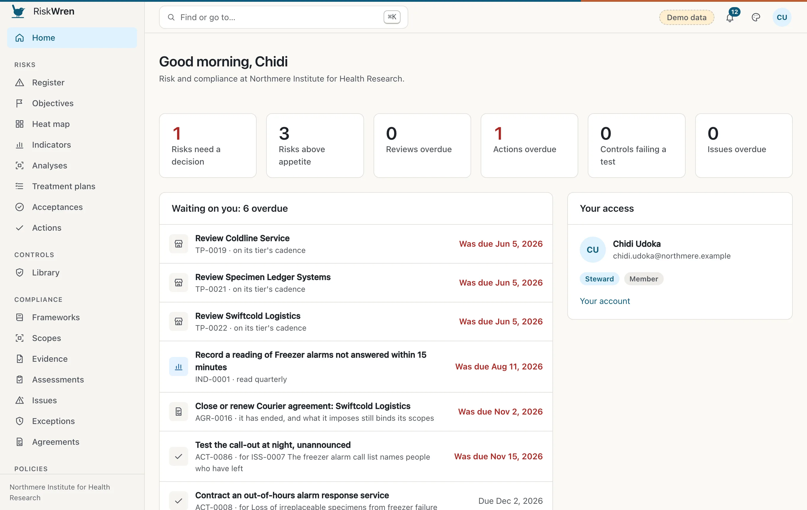

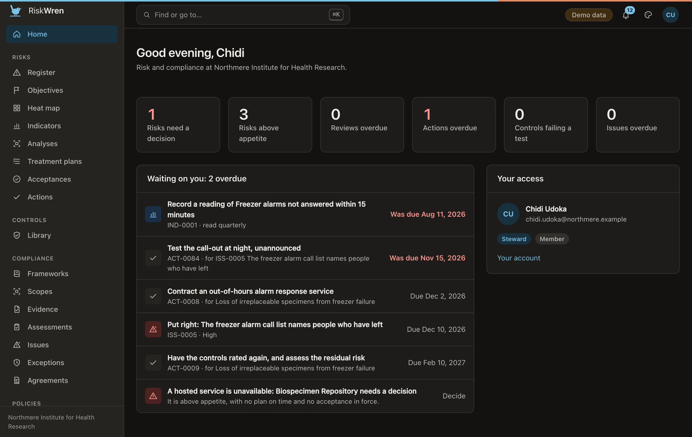
The inventory#
The inventory is what the organization has and depends on. It has six kinds of record:
| Record | What it is | Reference |
|---|---|---|
| Process | Something the organization does: a service a core provides, a clinical activity, payroll | PRC-0001 |
| System | What the work runs on: an application, a platform, an instrument, a device, a data store | SYS-0001 |
| Third party | Who it depends on: suppliers, service providers, collaborators, sponsors, subrecipients | TP-0001 |
| Information asset | A body of information it holds: what it is, where it is kept, and who it is shared with. The record describes the information and never contains it | INF-0001 |
| Service | What a third party provides: a hosted application, a maintenance contract, a test sent out. See Third parties | SVC-0001 |
| Site | A place the work depends on: a data center, a building, a laboratory, a clinic, a store of specimens or records. Its address, and the processes and systems that rely on it | SIT-0001 |
Every record has a name, a unit, a criticality, the most sensitive class of data it touches, and named owners. Systems also say how they are hosted and where they are in their life: planned, in service, being retired, or unsupported.
The inventory is open to everyone signed in, whatever the program's visibility setting, because a record can only be linked to what its author can see. A unit's steward or a manager adds records; owners, delegates, and stewards keep them current.


Add a record#
Each list has its own button, such as Add a system, for a steward of a unit (for that unit and those beneath it) and for a manager. As you type the name, records already here that it might be are shown beneath it (The same thing written down twice).
Whoever adds a record becomes its first owner, until they name someone else under Owners → Edit. A steward who adds a system for the person who runs it names that person as owner straight after.
Someone with no role who needs a record added asks their unit's steward. This keeps one record for each thing, each with a unit that answers for it.
Links#
A record says what it relies on:
| From | Link | To |
|---|---|---|
| Process | Relies on | System, service, or site |
| System | Relies on | Site |
| Process | Performed by | Third party |
| System | Supplied by | Third party or service |
| System | Holds | Information asset |
| Process | Uses | Information asset |
| Information asset | Is shared with | Third party |
| Service | Reaches | System |
| Service | Handles | Information asset |
| Third party | Subcontracts to | Another third party |
| Process or system | Depends on, or Is part of | Another of the same kind |
A link is added from the record it starts at: Links → Add a link, by someone who may edit that record. It can be removed from either end, by someone who may edit either, and is read from both. A lab can say that its work relies on central storage without anyone in central computing doing anything.
Business impact and recovery#
A process's Business impact tab says what the organization cannot afford to lose:
- how much its loss hurts as time goes on: after four hours, a day, three days, a week, and a month, from negligible to severe;
- how soon it must be back (its recovery time);
- how much information it can afford to lose (its recovery point);
- the least it needs to run.
An analysis is a judgment by a named person and is never edited: analysing again supersedes it, and every one is kept.
A system's, a service's, a site's, or a third party's Recovery tab says what it can actually deliver: what it can be restored within, how much information it can lose, and what that rests on (a restore tested on a date, a supplier's contract, a design never tried), with the processes that rely on it and what each needs. A site says how soon work goes on again, there or somewhere ready to take it; it loses no information of its own, and its tab lists the systems that go down with it. A third party's is for the processes it performs.
The process's tab then checks everything it depends on against what it needs (each system, service, and site it relies on, and each third party that performs it), and lists every shortfall: one that cannot be back in time, one that would lose more information than the process can afford, and one whose capability nobody has said. Reports → Resilience lists every analysed process, those with the most shortfalls first.

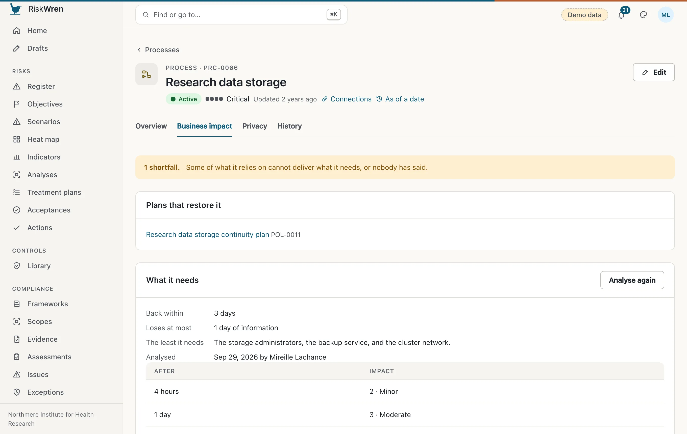

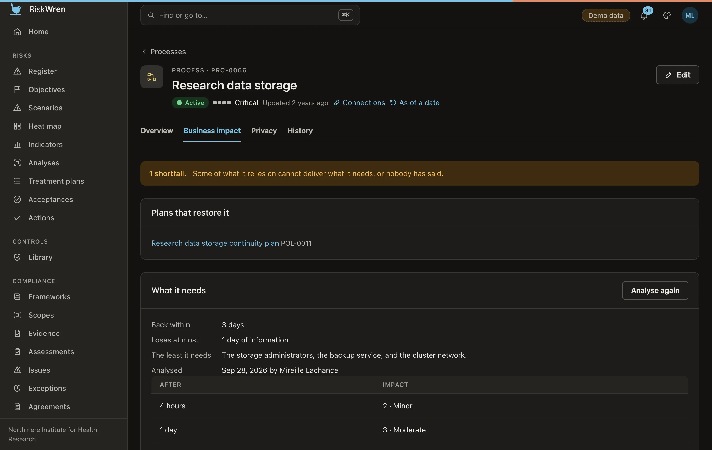
Continuity plans and exercises#
A continuity plan says what to do to keep a process going, or to bring it back, when something stops it. It is written as a document of the kind Continuity plan (Policies), so it has versions, approval by named people before each is published, owners, and a review date, as any document does. Reports → Continuity plans lists every plan in use, and the processes with a business impact analysis that no plan restores.
A plan's page shows the version in force, and, beside it, what is needed to use it:
- What it restores, soonest first: each process it is said to restore (Change, by those who keep the plan), how soon it must be back and how much information it can lose, the least it needs, and each system and service it relies on, against what that can deliver.
- Whom to call: the plan's owners, and the owners of each process and of what each relies on, with their titles and email addresses.
- Exercises: each test of the plan.
Print prints the page without the application around it. Download for offline use gives the version in force as one HTML file that needs nothing else to open. It holds the plan's words, what it restores and in what order, what each relies on, whom to call, and when it was last exercised. It also names the version and the moment it was taken, so that whoever holds it can check it is still the one in force. Keep a printed or downloaded copy where it can be reached when the systems are down. A process's Business impact tab names the plans that restore it.
An exercise is a test of the plan: a tabletop, a walk-through, a simulation, or a full interruption. Record an exercise (those who keep the plan, and those who assess for its unit) says when it was held, what was tried, who took part, what happened, whether the recovery objectives were met, and how long recovery took if it was timed; it is kept with the version that was in force. Something it showed must be put right is a finding: Raise a finding raises an issue in the one register, for the plan's unit, with the exercise as its source. A plan is exercised every 12 months (the program's plan_exercise_months cadence), a new one within three months of being written; one due within a month waits on its owner's home page.

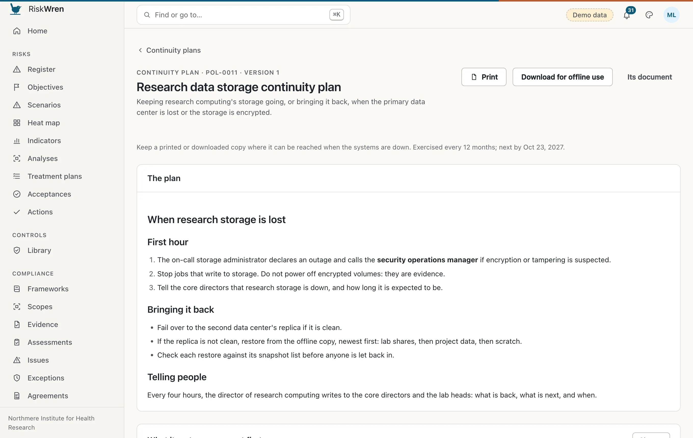

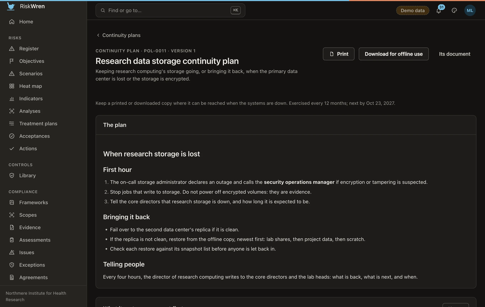
Connections#
Every record has a Connections link beside its name. It opens a picture of everything joined to the record: its links in both directions, the risks that bear on it, the controls that reduce them, the scopes it is in, and the evidence, issues, and exceptions about it. A list beside the picture says the same in full. See Connections.

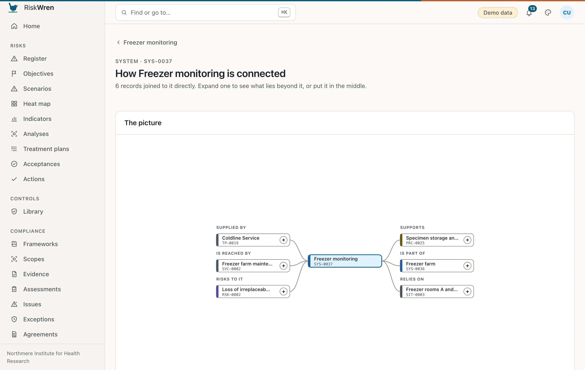

Known elsewhere as#
A process, system, third party, information asset, service, risk, control, or scope can carry what it is called in other systems: an asset tag, a contract number, a ticket, an entry in a configuration database. Known elsewhere as → Edit on the record. Search finds a record by any of them.
An identifier becomes a link when its system has an address pattern. The pattern is part of the program: a url containing {id} on the system's entry in the external_systems vocabulary of a program pack, such as https://servicedesk.example.org/ticket/{id}. Admin → Program can rename the systems but not set their patterns; see Change the program with a pack.
Import and export#
Every list has an Export button. It gives the list as it is filtered, and as much of it as you may see, as a spreadsheet (CSV) or as data (JSON). Taking an export is recorded in the history.
A steward or a manager can Import processes, systems, third parties, information assets, risks, and controls from a spreadsheet saved as CSV:
- Choose the file. RiskWren reads its headings and matches them to fields where the names make it plain.
- Say which column holds anything it could not match. A unit is given by its code or its name, an owner by their email address, and a choice by its key or by the words you see in the app.
- Check the file. Every problem is listed with its row. Nothing has been added yet.
- Import, once every row is good.
Each row is added as if by hand, by the same rules, in your name. Nothing is added unless every row can be, and a file imported twice adds nothing the second time. A file exported from one installation imports into another with its references kept. A rating is never imported: what a file says of how a control works, or how much risk remains, is a judgment to be made here by a named person.

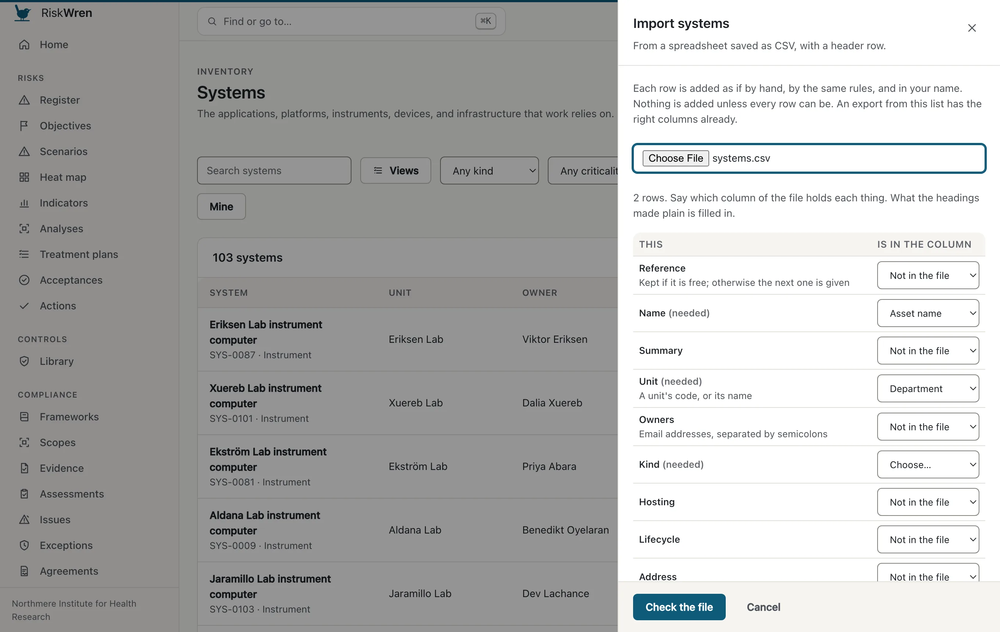

Owners#
Every record names the people who answer for it. An owner is accountable, a delegate acts for the owner day to day, and a contact knows the detail. Owners and delegates may edit the record. Whoever adds a record is its first owner.
When an owner's account is disabled, nothing they answered for is left without an owner. What they alone owned passes to the steward of its unit, who is told, and stays listed as theirs to pass on until someone is named for good. See When someone leaves.
Move or retire a record#
Nothing in the register is ever deleted. A record that is no longer in use is retired, and one that belongs to another unit is moved.
- Retire it: Edit, then Status: Retired, and Save. It stays on its list, marked Retired, with its links, its owners, and its whole history. A new risk analysis does not look at it, and Reports → Tidy no longer expects it to be complete. Status: Active brings it back. A control is retired the same way, and can then no longer be linked to a risk. A risk is closed instead (Close), and an indicator has its own way of retiring (Indicators).
- Move it: Edit, then choose its new Unit, and Save. You can move a record only to a unit you look after: a steward to their own unit and those beneath it, a manager to the units they manage. Its owners stay as they are, and the history records the move. A move between units that no one steward looks after is made by a manager.
History#
Every record has a History tab: who changed what, when, with each value before and after. Nothing in it can be edited or removed. See The history.
Risks#
Raise a risk#
Risks → Register → Raise a risk, for a unit's steward or a manager. Start from the library when you can, by searching it at the top of the form: the starter library holds common risks, written as a cause, an event, and a consequence, each with its category and the controls commonly used for it. Change the wording to fit; the library is a starting point, not a standard.
A risk needs a Title, a Category, and a Unit, and is clearer for its Cause, Event, and Consequence. Tick Restricted if only those who must know should see it. Raise adds it, and you are its first owner: name who answers for it under Owners → Edit if that is someone else.
Who raises a risk, and why:
- A unit's steward, or a manager, raises it from the register. A risk is something its unit answers for, so it is added by those who keep the unit's records. That keeps one register, written once, with an owner from the start, rather than the same worry written down by everyone who has it.
- Anyone working a risk analysis may raise one there. An analysis is a structured look the unit has chosen to take, and a risk it raises goes to whoever owns the thing it is about (Risk analyses).
- A member who sees a risk tells their steward, or reports it as a Concern under Incidents → Report something, where those who triage for the unit see it (Incidents).
When the assistant is turned on, Draft with the assistant beside Raise a risk drafts one from a few sentences: see The assistant.
What it concerns#
Say what a risk concerns, so that anyone looking at a system sees the risks that bear on it. On the risk's Overview, Concerns → Edit finds processes, systems, third parties, and information assets by name; Save keeps the list. A risk can also concern services and sites: the API takes them (PUT /api/v1/risks/{ref}/subjects), and a risk analysis, which looks at every kind of thing in the inventory, names whatever it found the risk in. What you cannot see stays as it is when you save.
Assess it#
A risk carries up to three ratings, and each is a judgment recorded by a named person with a reason.
| Rating | The question it answers |
|---|---|
| Inherent | How much is at stake if the controls did not exist or did not work? |
| Residual | How much remains, with the controls as they actually work? |
| Target | Where should it be once the plan is done? |
Assess, under How much is at stake on the risk's page, is for its owners and delegates, the unit's steward, a manager, and assessors for the unit. Choose Which rating, then a likelihood from 1 (rare) to 5 (almost certain) and an impact from 1 to 5 on each dimension that applies: mission, safety, financial, legal and regulatory, and trust. Every level has a written definition, shown as you choose, so that two people rating the same thing reach the same answer. The overall impact is the highest level on any dimension, and the rating is read from the matrix: low, moderate, high, or critical.
A reason (Why) is required. An assessment is never edited: a new one supersedes it, and the earlier one stays in the Assessments tab with who made it and why.
Rating and standing#
These are two different things, and RiskWren always shows them apart.
- The rating says how much is at stake.
- The standing says whether the risk is in order.
| Standing | Meaning |
|---|---|
| Within appetite | The residual rating is at or below what the organization has said it will live with for this kind of risk |
| Being treated | Above appetite, with a plan that is active and on time |
| Accepted | Above appetite, and accepted by someone with the authority, until a date |
| Needs a decision | Above appetite, and neither treated nor accepted. This is what leaders should look at |
| Not assessed | No residual rating yet |
| Closed | No longer applies, and kept for the record |
A critical risk that is accepted is in order. A moderate one in a category with a low appetite, with no plan and no acceptance, is not.


Reviews#
Each risk has a next review date, sooner the more is at stake: by default every 3 months for critical, 6 for high, 12 for moderate, and 24 for low. A review is a new residual assessment, even when nothing has changed; say so in the reason. A risk past its date shows as overdue, on its page and on its owner's Home.
Escalate#
Escalate, on the risk's page, raises it to a unit above its own, with the reason. Its owners and delegates, the unit's stewards and leaders, and managers may. The risk stays in its own unit with its owners; its page and the register then show Escalated to that unit, and why.
Escalating sends no notice. Tell the leader above yourself, and point them at the risk. A leader's Home already lists every risk that needs a decision in the units they lead, those beneath included, so escalation is a marker that says "this needs you", not a way of reaching them. Escalate → Take it back down ends it.
Close#
Close a risk when it no longer applies, with the reason (Close, for those who may edit it). It leaves the open register and stays findable, with its whole history. A closed risk cannot be assessed or given a plan. Reopen, on its page, puts it back in the open register, where it can be assessed again.
The objectives it threatens#
Risks → Objectives holds the organization's strategic objectives: what it means to achieve, over what period, and how it will know. A unit's leaders, or a manager, add them; the organization's strategic plan is the usual source.
A risk names the objectives it threatens, under Objectives it threatens on the risk (those who keep the risk). Each objective then lists exactly the risks that name it, with how each stands, and the list of objectives shows how many open risks threaten each, by rating. That is the register read against the strategic plan: which aims are most at risk, and from what.

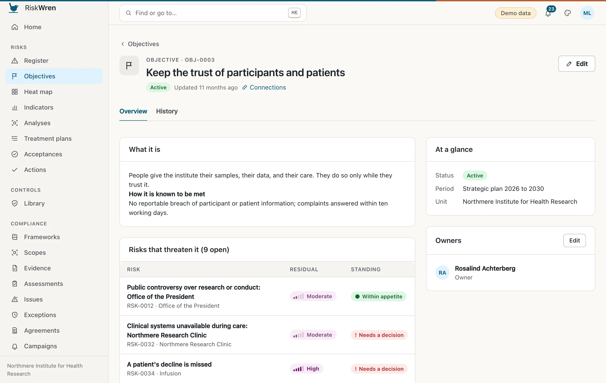

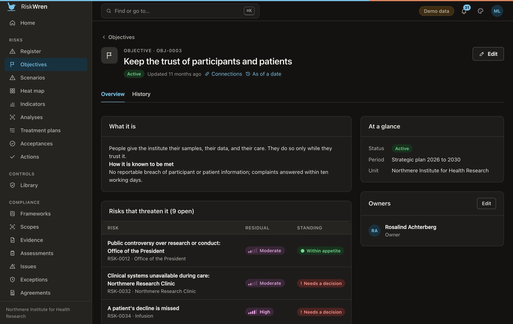
The register can be cut to the risks that threaten one objective. A risk's history keeps each objective it came to name, or stopped naming.
The bow-tie#
A risk's Bow-tie tab draws it left to right: what could cause the event, the controls that keep it from happening, the event, the controls that soften what follows, and the consequences. Nothing is entered for it. It reads the risk's own cause, event, and consequence, and the controls on its Controls tab: a control that reduces likelihood stands before the event, one that reduces impact after it, and one that reduces both on both sides, each with where it stands. A cause or consequence written one to a line, or with semicolons between, is drawn as several. A table below says the same for those who do not read diagrams.

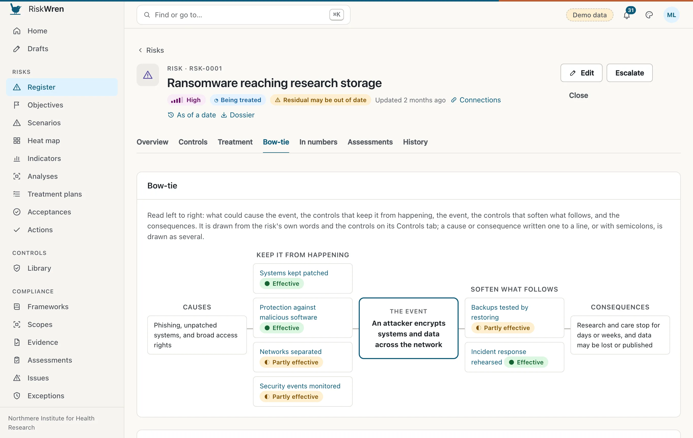

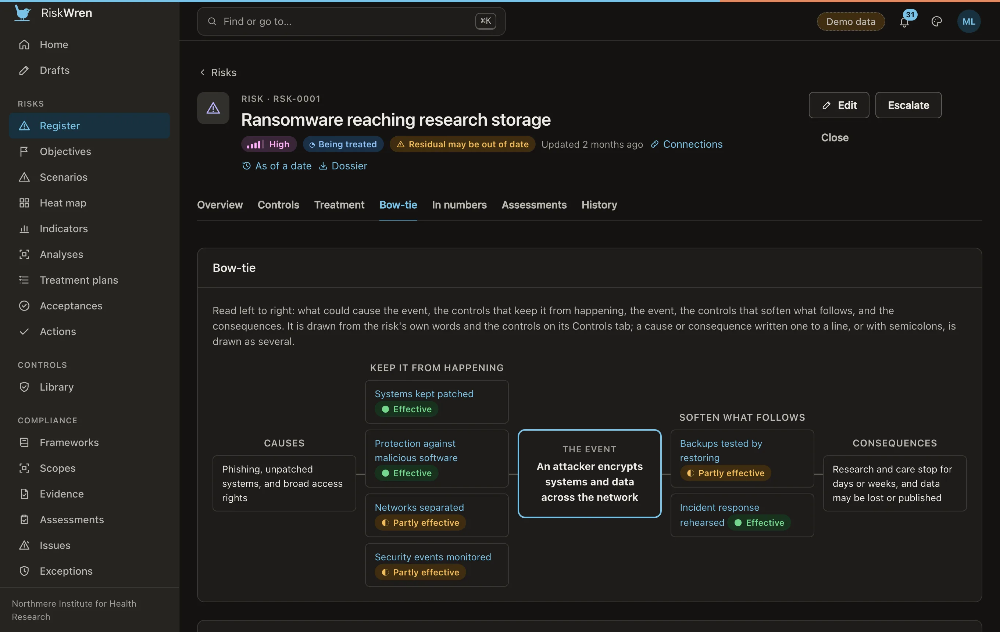
Estimates in ranges#
A rating on the program's scales is what the register is run by. For the risks worth putting a figure on, the risk's In numbers tab takes an estimate as ranges: how often a year (the fewest, the likely, and the most, where 0.1 is once in ten years) and what each time costs (the least, the likely, and the most), with what the numbers assume, which is required. Estimate in ranges, and later Estimate anew, are for those who keep the risk: its owners and delegates, the unit's steward, and a manager. An estimate is never edited: estimating anew supersedes the last, and every one is kept and in the history.
Costs are in whole units of one currency, given as a three-letter code: USD unless you say otherwise. A scenario adds up only risks estimated in the same currency, and says so when they differ.
A simulation then plays out ten thousand years: in each, the year's rate is drawn from a PERT distribution over the frequency range, the number of events from a Poisson distribution at that rate, and each event's cost from a PERT distribution over the loss range. It says the average loss a year, the loss exceeded one year in ten, the chance of any loss in a year, and the chance of a year's loss passing each of ten figures from the median to the worst year simulated, with every assumption in words. Its draws are seeded from the estimate, so the same estimate always gives the same figures, and a figure quoted in a report can be checked.

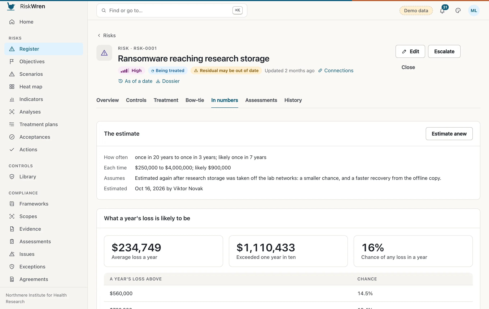

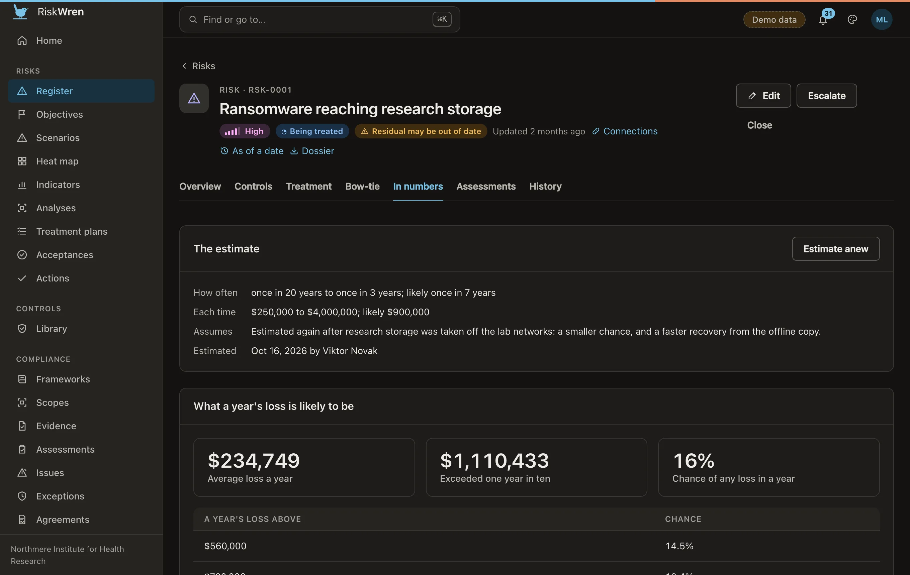
Scenarios#
Risks → Scenarios holds stories told on purpose: what might happen ("ransomware takes research computing down for two weeks"), what is assumed, the risks it would bring about or make worse and the processes it would stop, and, once it has been worked through, what was concluded. A scenario is kept by the stewards and leaders of its unit, and by assessors and managers, who work through scenarios with them; concluding one needs its conclusion. Where the risks it touches have estimates in ranges, the scenario shows what a simulation of them together comes to, taking them as independent, and names the risks it touches that have no estimate.

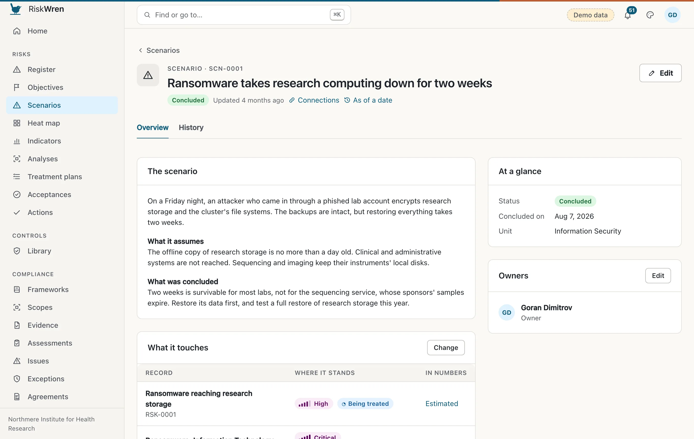

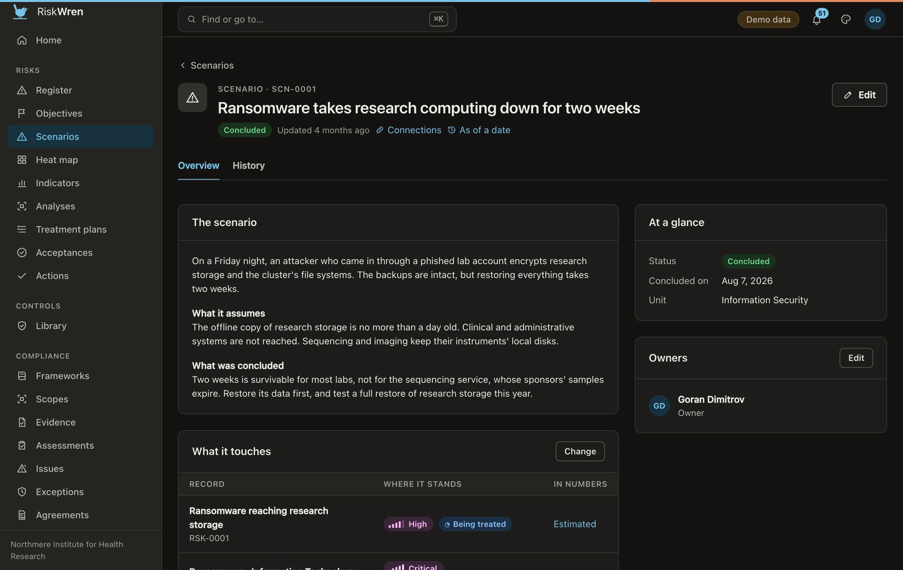
Controls#
A control is something the organization does to make a risk less likely or less harmful. It is described once, in the unit that operates it, and every risk it bears on leans on the same record, with the same rating.
Controls → Library is your organization's own controls. It can be cut by Effectiveness (effective, partly effective, ineffective, or not assessed) and by What its rating rests on: tested and effective, tested and found wanting, or no test that still holds.
A control's page has four tabs: Overview (what is done, how well it works, its evidence, the risks it bears on, and the documents that direct it), Requirements (what it helps to satisfy, framework by framework), Ratings (every rating, the one in force and those superseded), and History.
Add a control#
Controls → Library → Add a control, for a unit's steward or a manager. Start from the starter library of common controls in plain words: search it, choose one, and then make it specific. The starting text says "backups are tested"; yours says which systems, how often, and by whom.
| Field | What it says |
|---|---|
| Title | A few words, such as "Backups tested by restoring" |
| Statement | What is done |
| Objective | Optional: what it is meant to prevent, detect, or put right |
| Kind | Preventive, detective, corrective, or directive |
| Nature | Manual, automated, or both |
| How often | From continuous to annually, or when the occasion arises |
| Unit | The unit that operates it |
| Key control | One that a serious risk depends on above all others. A key control is tested more often: see Key controls and the next test |
| Restricted | Seen only by those who must; see Who sees what |
A control started from the library arrives mapped to the requirements the library suggests for it, in each framework installed, each marked as partly answering it and Suggested by the library until someone says more. Check each on the Requirements tab, and see Map controls to requirements.
Rate a control#
What is known about a control is recorded as a rating with two parts and a note:
- Design: if it were done as described, would it work?
- Operation: is it actually done?
Each is effective, partly effective, or ineffective. Rate is for its owners and delegates, the unit's steward, a manager, and assessors for the unit. What this rests on says what was looked at. As with assessments, a rating is never edited, only superseded.
A control is as strong as the weaker of the two: one well designed but only partly done is partly effective, and one that is done but would not work as designed is ineffective. One left at None is not assessed.
A control that has never been rated is not assessed, and a rating older than twelve months is out of date. Neither counts for anything until someone looks.
A rating by its owner or a steward is a judgment. A rating from a test in an assessment, recorded by someone who does not own the control and confirmed by a second person, outranks it: while a test result holds, the control cannot be re-rated by judgment. See Evidence and testing.
Link a control to a risk#
On the risk's Controls tab, Link a control finds a control by name or reference, and says how it bears on the risk:
- what it reduces: likelihood, impact, or both;
- how much the risk leans on it: primary (the risk relies on it) or supporting (it helps).
A risk started from the library lists the library's controls for it under Commonly used for a risk like this. Add and link opens Add a control filled in from the library, in the risk's unit; saving it links it to the risk as primary, reducing what the library says it reduces. Rate it when you know how well it works. If your unit, or another, already runs that control, link the one on record instead: one control, rated once, serves every risk that leans on it.
Under the default visibility a steward sees only their own unit's controls, so they cannot link a control another unit runs, such as central backup or network separation. Ask a manager to link it; or the program can open the register to everyone (Who sees what).
What the controls suggest#
Once a risk has an inherent rating and linked controls, RiskWren shows the residual rating the controls suggest, with its working:
- Each control counts by how well it is known to work, which is the weaker of its design and its operation: effective counts in full, partly effective counts half, and ineffective, not assessed, and out of date count nothing.
- A primary control counts in full; a supporting one counts half.
- The counts are added up for likelihood and for impact. Each whole point takes that axis down one level, by at most two levels.
So a critical risk at likelihood 4 and impact 5, with one primary control that works, one that partly works, and impact controls adding up to one, is suggested at likelihood 3 and impact 4: high.


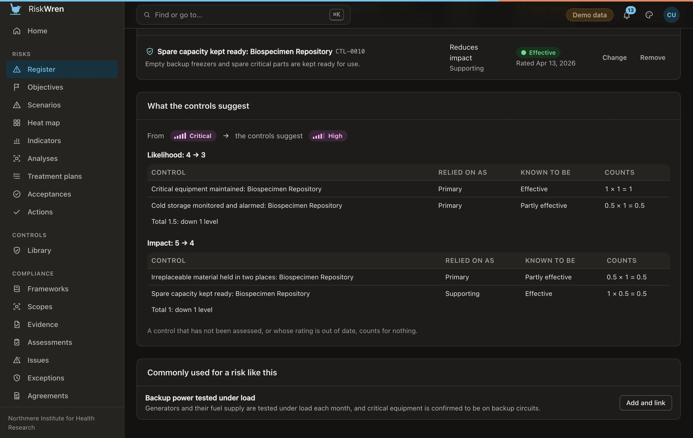
The suggestion is arithmetic and nothing more. The person assessing sees it, and then records their own judgment, which may agree or differ. If it differs, the reason says why, and both are kept.
When the picture changes#
A risk's residual rating is put in doubt when something it rested on changes. RiskWren never changes a rating by itself. The risk's page says "The residual rating may be out of date", with the reason; the risk is on the Home of its owners and delegates, to assess again; and it is counted among the ratings in doubt.
| What changed | When the rating is put in doubt |
|---|---|
| Its controls | A control is rated worse, unlinked, or linked differently, and what the controls now suggest is worse than both the residual rating on record and what they suggested when it was made |
| Its plan | A treatment plan's last action is done (Plans and actions) |
| An indicator | An indicator that warns of the risk passes its limit (Indicators) |
| A risk analysis | An analysis names the risk as covering a thing and ticks its rating needs another look (Risk analyses) |
A new residual assessment lifts the doubt. A doubt the controls raised also lifts when they no longer suggest a worse rating, as when a control is put right. A doubt from a plan, an indicator, or an analysis stays until someone assesses the risk again: no change to its controls lifts it.
Treatment#
A risk above appetite needs an answer. On the risk's Treatment tab, Record a response, with the reason: Reduce it (through a plan), Accept it (live with what remains, by a named decision), Transfer it (by contract or insurance), or Avoid it (by stopping the activity).
The response says what is intended. It does not change the risk's standing. Only a plan on time makes a risk Being treated, and only an acceptance by a leader with the authority makes it Accepted.
Plans and actions#
Open a plan (those who may edit the risk) says what will be achieved (Objective), the Target rating, Who owns the plan, and when it is Due. If no response was recorded, opening a plan records Reduce. Add an action for each step: what is to be done, who will do it, and by when.
- While a plan is active and its date has not passed, the risk is being treated.
- A plan's owner, and anyone who may edit the risk, manage the plan: they add actions, and Cancel the plan with a reason, which cancels its open actions with it. Through the API they may also rewrite, reassign, or cancel a single action.
- An action's owner may Start it, mark it Done with a note of what was done, Move its date, or Reopen it, and nothing more. Moving a date needs a reason, and the original date and every move stay on the record.
- When no action is left open and at least one is done, the plan is complete. That does not lower the rating: the risk's rating is put in doubt, and its owners are asked for a new residual assessment that reflects what was actually achieved. Because the plan is no longer active, a risk still rated above appetite needs a decision until it is assessed again.
- A plan that passes its date with work still open no longer counts, and the risk needs a decision again.
Treatment plans and Actions in the sidebar list them across everything you may see. Actions can be filtered to your own and to those overdue.


Accept a risk#
Accepting a risk is a decision by a named leader to live with what remains, for a stated reason, until a date. Accept this risk, on the Treatment tab, is offered to those who may; to anyone else, the tab says why not. Three rules always hold:
- Nobody accepts a risk they own. It goes to a leader above. A delegate is not barred: only an owner is.
- Only a leader of the risk's unit, or of a unit above it, may accept it, and for a high or critical risk only one whose limit reaches that rating. A moderate risk needs no particular limit, as shipped.
- An acceptance expires. By default a moderate risk can be accepted for up to 24 months, a high one for 12, and a critical one for 6. The form offers the latest date allowed, and refuses a later one.
An acceptance can carry Conditions, the things that must stay true while it runs.


An acceptance covers the rating that was accepted. If the residual rating later rises above it, or the acceptance expires or is withdrawn, the risk needs a decision again. Acceptances in the sidebar lists them, soonest to expire first, and can show only those expiring within 30 or 90 days.
Withdraw, with a reason, is for whoever gave the acceptance, or a manager for the risk's unit, and is offered only to them.
Choosing Accept as the response is not an acceptance. It records what is intended and why, and changes nothing about standing: the risk still needs a decision until a leader with the authority records an acceptance.
An example: accepting a moderate risk#
In the demo organization, sign in as the steward of the Biospecimen Repository, Chidi Udoka. The repository's specimen tracking system is a hosted service, and people who leave the repository may keep their accounts on it.
- The steward raises the risk. Risks → Register → Raise a risk, search the library for "leaves", and choose Access kept after a person leaves or changes role. Its category is Privacy, in Regulatory and legal, whose appetite is low. The unit is the Biospecimen Repository. Raise: Chidi is its first owner. On its Overview, Concerns → Edit, find "Specimen tracking", and Save.
- The steward assesses it. Assess, Inherent: likelihood 3, Possible, and impact 4, Major, on legal and regulatory, which is high. Then Assess, Residual: likelihood 2, Unlikely, and impact 3, Moderate, which is moderate. The reason says that the supplier removes an account within a day of being asked. Moderate is above the low appetite, and with no plan the risk needs a decision.
- The steward records the response. On the Treatment tab, Record a response: Accept, because the remaining gap is small. The standing is still Needs a decision: the response is the steward's view, not a decision.
- A leader of the unit accepts it. Sign in as the unit leader, Ines Castellanos, who leads the Biospecimen Repository with a limit of moderate. The risk is on her Home. On its Treatment tab, Accept this risk: say why it is being lived with, add a condition ("Leavers' accounts are removed within one working day of the request"), and choose Until. A moderate risk can be accepted for at most 24 months; the form offers that date and refuses a later one. Accept records it in her name, and the risk is Accepted until that date.
- A high risk needs a higher limit. Had the residual rating been high, her Treatment tab would say "Accepting a High risk needs a leader whose limit reaches High." The division leader, Soren Eriksen, leads Core Facilities, the division above the repository, with a limit of high, so he may accept it, for at most 12 months. A critical risk needs a leader whose limit is critical, over the risk's unit: in the demo, the President, Rosalind Achterberg, who leads the whole organization, or the chief operating officer, Henrik Soderberg, who leads Core Facilities among other divisions.
Before it expires, the acceptance is on her Home, and its owners and she are reminded. When it ends, the risk needs a decision again.
A worked example: from a system to a treated risk#
This example follows one risk from the system it is about to its treatment, in the demo organization. Sign in as the steward of the Biospecimen Repository, Chidi Udoka. Suppose the freezer monitoring console, which pages someone when a freezer warms, runs an operating system that no longer receives security updates. The risk and its own control are made as you go; the system, and central IT's control with its rating, are the demo's.
- Look at the system. Inventory → Systems → Freezer monitoring. It is critical, it is part of the freezer farm, and its page lists the risks that concern it, with what relies on it.
- Raise the risk. Risks → Register → Raise a risk. Search the library for "unsupported" and choose Unsupported systems in use. Make it specific: the title "Freezer monitoring console no longer receives security updates", and a cause, event, and consequence about the console and the alarms it sends. The category comes from the library: Information and technology, under Integrity and change, whose appetite is moderate. The unit is the Biospecimen Repository. Raise: Chidi is its first owner.
- Say what it concerns. On the risk's Overview, Concerns → Edit, find "Freezer monitoring", and Save. The system's page now lists the risk.
- Assess the inherent risk. Assess, with Which rating set to Inherent: likelihood 4, Likely, and impact 4, Major, on mission (months of work lost if specimens thaw unnoticed). Give the reason, and Record the assessment. On the default matrix, likelihood 4 and impact 4 is high.
- Link controls, and read what they suggest. On the Controls tab, Commonly used for a risk like this lists the library's controls for unsupported systems. - Add and link Unsupported systems listed and contained, made specific. Its title becomes "Freezer monitoring console listed and contained". Its statement says who answers for the console, when it will be replaced, and that it may be reached only from the repository's network. It is linked as primary, reducing likelihood. On the control's page, Rate: design effective, operation partly effective, because the console can still be reached from the general network. It counts half. - Networks are separated by central IT, whose control Chidi cannot see under the default visibility. The risk manager, Mireille Lachance, opens the risk and uses Link a control to link central IT's Networks separated (
CTL-0003): primary, reducing impact. It is rated design effective and operation partly effective, so it counts half as well. Chidi's Controls tab counts it in the suggestion, and says that one more control is linked that he does not have access to. - What the controls suggest: half a point against likelihood and half a point against impact take neither down a level, so the suggestion stays at likelihood 4 and impact 4: high. Controls that only partly work move a rating only once they add up to a whole point. - Assess the residual risk. Assess, Residual: likelihood 4 and impact 4, high, agreeing with the suggestion. The reason says that both controls only partly work. The risk is above its family's moderate appetite and needs a decision: it is on Chidi's Home, and on the Home of the unit leader and the division leader. The unit leader's limit is moderate, so she may not accept it; the division leader could, for up to 12 months. Chidi chooses to bring it down.
- Open a plan with actions. On the Treatment tab, Open a plan: the objective "Replace the console with one that receives updates, and move the alarms to it", the target rating moderate, Chidi as its owner, and a due date three months away. Open the plan. The response becomes Reduce, and the risk is Being treated. Add an action twice: "Buy and install a supported console", for Chidi, and "Move every alarm and test that each one pages someone", for the specimen technician, Dalia Ferreira, each with its date.
- Finish the plan. Each owner marks their action Done, with what was done. When the last one is done, the plan is complete, and the risk's page says the residual rating may be out of date: "Its treatment plan PLN-… is complete. Assess the residual risk again." The risk is on Chidi's Home to assess again, and, with the plan no longer active, it needs a decision again until he does.
- Assess again. Assess, Residual: likelihood 2, Unlikely, now that the console receives updates, and impact 4, as before: moderate. The reason says what the plan achieved. The risk is Within appetite, the doubt is lifted, and its next review is set a year away, as a moderate risk's is. Rate the console's control again too, so that what is known about it is current.
The risk's Assessments tab now holds each judgment with its reason, its Treatment tab the plan and its actions, and its History every step, with who took it and when.
Risk analyses#
A risk analysis is a structured look at what is in a scope: each thing taken against each of a list of threats. It is the exercise a security rule or a funder asks for by name, and it leaves a report of what was considered. Risks → Analyses → Start a risk analysis (a steward, a manager, or an assessor, for the unit).
- What to look at: what a scope's boundary names, including everything held by the units it names; or everything a unit and the units beneath it hold. Every kind of thing in the inventory is looked at, services and sites included, but only what is in use, and only what you may see.
- Which threats: whole categories of the risk library. Each library risk is one threat.
One question is made for each thing against each threat, on the day it starts; the form says how many before you begin. An analysis is held to 1,500 questions: beyond that it is two exercises, and the form asks for fewer threats or a narrower scope. Nothing is added later, so the analysis says what it looked at.
Open a thing to work through it. Its owners, the unit's steward, a manager, and assessors for the unit may answer. For each threat there are three answers, each with room to say why:
| Answer | What it does |
|---|---|
| Does not apply | Records that it was considered and set aside, with the reason |
| A risk already covers it | Names the risk. The risk now says it concerns this thing. Tick its rating needs another look to put its residual rating in doubt and tell its owners |
| Raise a risk | Starts a risk from the library, in the thing's unit, about the thing. It goes to whoever owns the thing, and they are told; a thing with no owner leaves the risk with whoever raised it |
Risks already on the register that were started from the same threat, in the thing's unit or about the thing itself, are offered first. Under The rest, a button such as None of the other 12 apply answers every threat still unanswered for one thing at once.


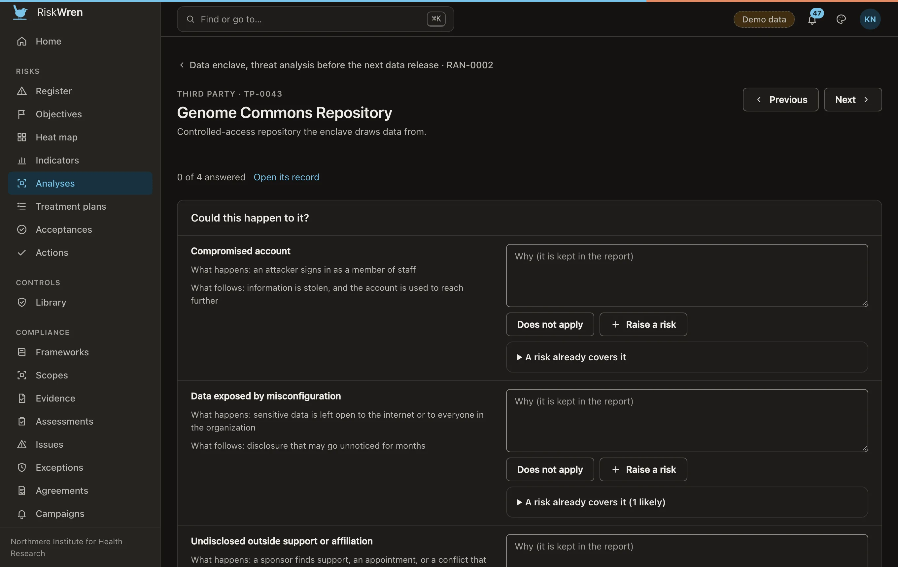
The analysis page shows how far it has got, each thing with its count, and the risks raised and looked at again. Whoever leads it has Carry on on Home until it is finished. It can be closed only when every question has an answer and with a few sentences on what it found, so the report passes over nothing in silence.


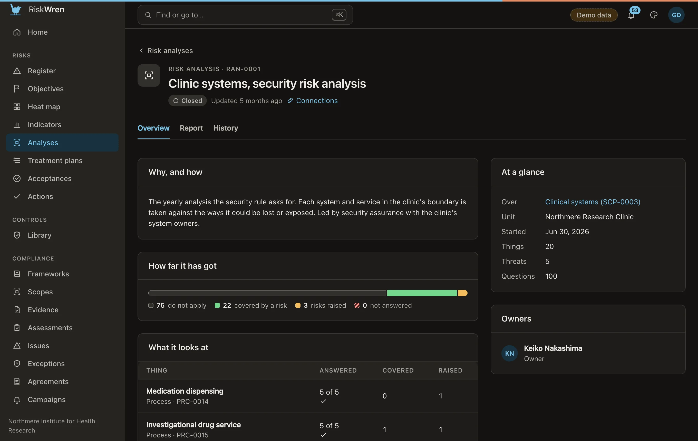
Report lists everything considered, thing by thing, with what was decided, why, by whom, and when, and prints. It keeps the names things had on the day, so it still reads if one is later renamed or retired. A closed analysis can be reopened by those who work it.
Drafts and the assistant#
Drafts#
An assistant, or another system with a token, may propose a risk, an issue, or a control. The proposal is a draft, and waits under Drafts, beside Home in the menu, for a person who may add that kind of record in its unit: a steward or a manager for a risk or a control, and also an assessor for an issue. The menu shows Drafts to stewards, managers, and assessors. Whoever asked an assistant for a draft sees it too.
- Open puts the draft in the ordinary form (Raise a risk, Raise an issue, or Add a control) filled in. Change what you like and save it: every rule for a record you make applies, and saving marks the draft as used, naming the record.
- Set aside keeps the draft on record with why, which is required, and makes nothing.
Home shows a line when drafts are waiting for you to make or set aside; nothing is said under the bell. See Drafts for where they come from.
The assistant#
When an administrator has turned the optional assistant on:
- Summarize, beside Connections on a record's page, writes a short summary of the record and where it stands. It is shown, not saved, and is not offered on a restricted record. See Summarize.
- Draft with the assistant, on the risk register, is offered to everyone signed in. It drafts a risk from a few sentences, or names one already on the register that says the same. The ordinary Raise a risk form opens with the draft filled in, and nothing is made until you save it. See Draft with the assistant.
- Someone who cannot add a risk can still draft one, but cannot save the form. The draft waits under Drafts for the unit's steward or a manager, and they are not told it is there. Tell them.
The assistant reads only what you may read, and what you type to it is sent to its provider as you wrote it.
Find anything#
Press ⌘K (or Ctrl K), or use the box at the top of every page, and type a name, a reference, or a few words. Records that match appear under the pages and actions; Search everything opens the full results.
- The search looks at every kind of record, and actions: in the name, the reference, the summary, and what a record is called in another system.
- Every word you type has to be on the record, in any order. Part of a word is enough.
- Results are grouped by kind, the closest match first. A reference typed exactly is its own best answer.
- You find only what you may open. A record you could not see on its own list is not in a search either, and is not counted.


Saved views#
Every list keeps its filters and sort in the address, so a list as you have it can be kept. Views, beside the search box of each list, saves what is showing under a name and lists the views of that list.
- A view keeps the question and never the answer. Whoever opens it sees what they may see, as it stands that day.
- A view is yours alone unless it is shared. A steward, an assessor, a manager, an auditor, or an administrator can share one, which puts it on that list for everyone.
- Only whoever saved a view can rename or delete it. An administrator can take a shared one down.
What a record is missing#
Each kind of record is expected to say a few things. A record that does not yet say one of them shows what it is missing under its title, with why it matters.
| Kind | Expected |
|---|---|
| Every kind below | An owner who can sign in |
| Processes, systems, third parties, information, services | The class of data it handles; a link to anything else |
| Third parties | A tier |
| Systems | Where it is hosted |
| Information | Where it is held |
| Risks | A rating; a control that bears on it |
| Controls | A rating of how well it works |
| Indicators | A reading; a risk it warns of; where it is read from |
| Documents | A version in force; for a standard, procedure, or guideline, the policy it implements; a control it directs or a requirement it answers |
| Agreements | What it covers |
Only records still in use are counted: a retired system or a closed risk is not expected to be complete. A summary is not on the list, because many records are plain from their name.
Reports → Tidy counts, for each kind, how many records are missing something and what. Each figure opens the list it counts, and any list can be cut the same way from its address with missing=, so it can be saved as a view.

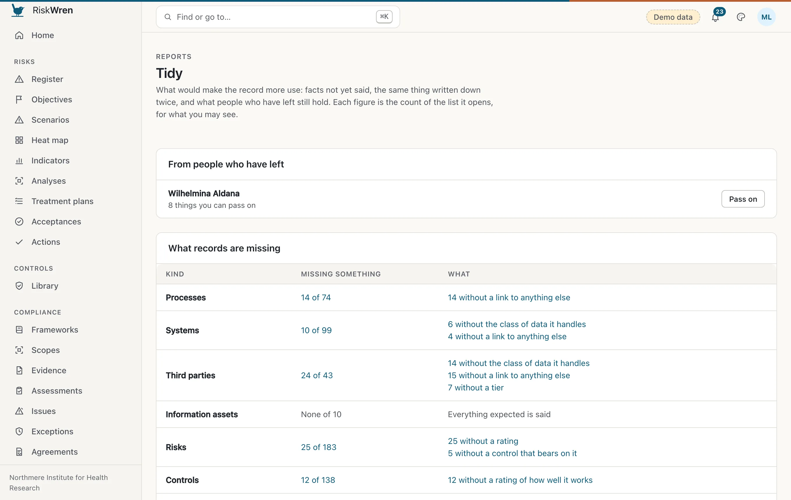

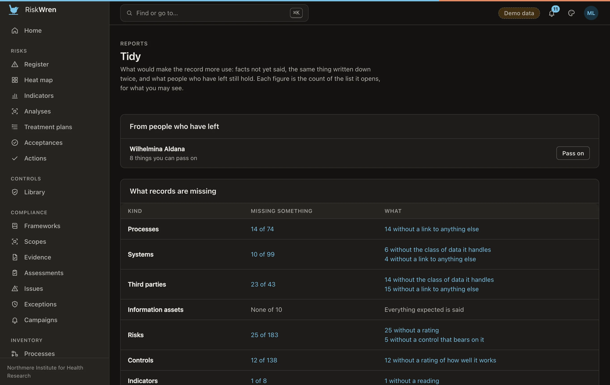
The same thing written down twice#
As you type the name of a new process, system, third party, information asset, risk, control, or issue, records already here that it might be are shown under the box. Open one in a new tab before adding another.
Reports → Tidy also lists Likely duplicates: pairs whose names have the same words in any order, or nearly the same spelling. Two units often keep a record each of the same thing on purpose, so across units only the very same name counts.
Nothing is merged for you. Open both, keep the better one, move what the other holds, and retire it. If they are different things, someone who may edit either presses Different things, and the pair is not suggested again.
Indicators#
An indicator is a number someone already reads, kept where the risks it warns of can see it: servers patched within 30 days, days to remove a leaver's access, people who entered a password in the phishing exercise. Risks → Indicators → Add an indicator (a steward or a manager).
| Field | What it says |
|---|---|
| What is measured | Such as "Days to remove a leaver's access" |
| Unit | The unit it belongs to |
| Counted in | What the number is counted in, such as %, days, or accounts, shown beside every figure. Empty for a plain count |
| Which way is worse | Higher is worse, or lower is worse. Patching is worse as it falls; open vulnerabilities are worse as they rise |
| Warning level | Optional: where it should start to worry people. It must be reached before the limit |
| Limit | Past this, its owners are told and the risks it warns of are flagged |
| Read | Every week, month, quarter, or year |
| Where the number is read from | A report, a console, a query, so that whoever reads it next reads the same thing |
| Why it matters | Optional |
The risks it warns of → Change, on the indicator's page, links any open risk you may see.
RiskWren does not fetch the number. The indicator's owners and delegates, or the unit's steward or manager, read it where it lives and record it on the indicator's page: It stands at, the day it was Read on, and A note if one is wanted, then Record the reading. A reading may be dated earlier than today, for a figure read and not yet recorded, but never later. A second reading for the same day corrects the first, and the history keeps both. The indicator stands at its newest reading.
Each reading is placed against the levels: within its limits, past its warning level, or past its limit. The page charts the readings against both levels and says whether the indicator is getting worse, getting better, or holding steady; a move of less than a twentieth of the distance between the warning level and the limit is steady.


When the newest reading passes the limit:
- the indicator's owners and the owners of each risk it warns of are told, once, with the figure;
- each of those risks that has been assessed, and is not already in doubt, is marked rating in doubt, with the indicator named as the reason (When the picture changes);
- the risk's page shows the indicator, where it stands, and its trend under Early warning.
A reading that is still past the limit the next time does not tell everyone again. One that comes back within the limit and later passes it does.
A reading that falls due is on its owners' Home and is reminded as it falls due and when it is late. An indicator nobody reads warns of nothing, so the list marks the overdue ones. Reports → Risk counts indicators by where they stand, under Early warning.
An indicator that is no longer read is retired: Edit, then Retired: no more readings are taken. It keeps its readings, takes no more, and is no longer due.
Seeing the whole#
- Register lists risks, with filters for category, residual rating, standing, and unit, a switch for the ones you are named on, and grouping by category or unit.
- Indicators lists every indicator with where it stands, and can show only those past their limit, past their warning level, or never read.
- Analyses lists the risk analyses, open and closed, each with how much of it has been answered.
- Heat map places every rated risk on the matrix, for the residual, inherent, or target rating, for a unit and everything beneath it, or for one category. Each cell opens the risks in it. With one category chosen, the cells above its appetite are marked above.
- Reports → Risk shows where the register stands, and Reports → Compliance how ready each scope is against what it is held to. Every figure opens the list it counts. See Read the dashboards.
- ⌘K (or Ctrl K) finds any record by name or reference, and goes to any page. See Find anything.


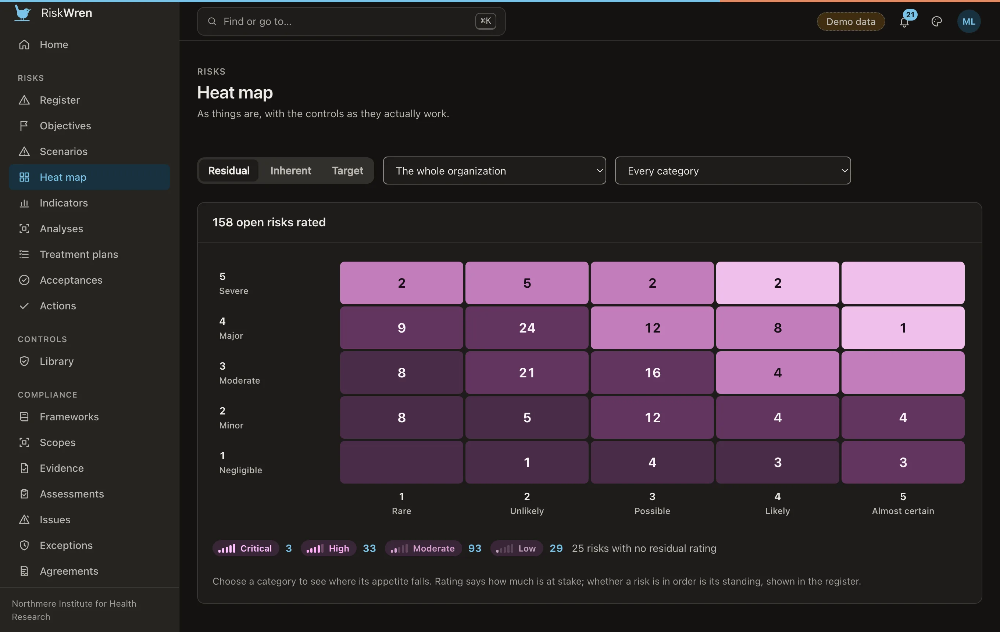
What you see in all of these is what you are allowed to see. See Who sees what.